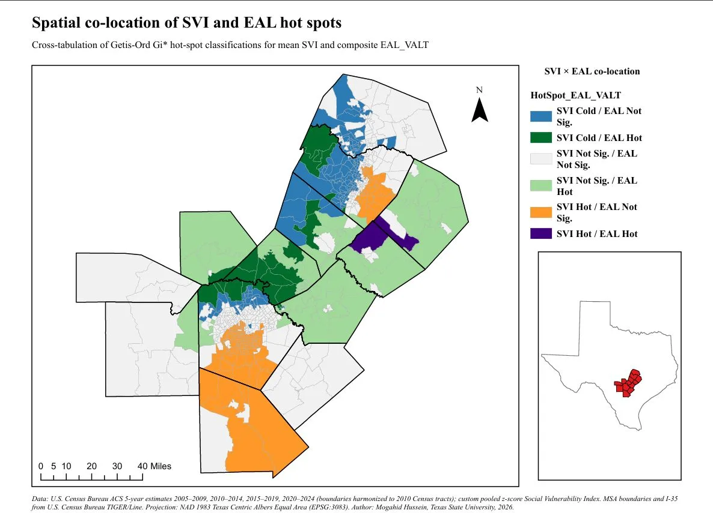

Texas SVI Pipeline
A 15-year social vulnerability index for 13 Texas counties, and a test of whether FEMA's loss model sees the same places.
Read the case study
Problem
Most vulnerability studies capture one moment, so they can't tell lasting disadvantage from a bad year. Planners also lean on FEMA's National Risk Index to target resources, but nobody had checked whether its loss hot spots line up with the communities least able to recover.
Approach
Pulled four ACS 5-year periods through the Census API, cleaned sentinel codes, adjusted income to 2019 dollars, and moved three generations of tract boundaries onto 2010 geography with margins of error carried through. Built a pooled z-score index, ran LISA clusters for each period, and grouped every tract into one of 10 trajectory classes. Then compared Getis-Ord Gi* hot spots of vulnerability and FEMA expected annual loss, with FDR correction.
Outcome
Only 2 of 188 vulnerability hot spots were also loss hot spots, and none of the 98 persistently vulnerable tracts were. The loss model follows property value, so it points away from the places with the fewest resources. 61 tests guard the pipeline, and CI blocks any commit that looks like an API key.